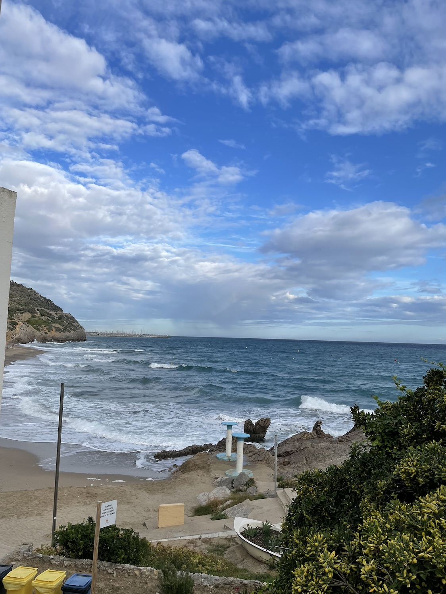

Fallstudie · Berufspraxis
ADAS-Tests · ISA
BYD · Spanien
Kontext
Von Frühjahr bis Herbst 2024 (Pkw) und im Herbst 2025 (Nutzfahrzeuge) unterstützte ich bei Neusoft Straßentests zur ISA-Homologation (Intelligent Speed Assistance) für BYD-Fahrzeuge in Spanien. Ziel war die Prüfung der Anzeigegenauigkeit der Geschwindigkeitsbegrenzung im Kombiinstrument gemäß der EU-Verordnung.
An den Tests war neben dem OEM auch der Kamera-Zulieferer beteiligt, der die zentrale Sensorik für die ISA-Funktion liefert — so konnten Probleme direkt vor Ort gemeinsam mit dem Kunden identifiziert werden.
Meine Rolle
Als Vertreterin des Kartenanbieters (DB Map) war ich für die Erfassung und Vor-Analyse aller kartenbezogenen Bugs zuständig und leitete ausschließlich relevante Befunde an unser Entwicklungsteam weiter. Zusätzlich erstellte ich täglich Testberichte und stand im direkten Austausch mit dem Kunden vor Ort während der Testfahrten.
Herausforderungen
- Fahrzeugzustände waren zu Testbeginn teils nicht homologationsreif — einige Steuergeräte liefen noch mit älteren Hardwareständen, was Tests zeitweise blockierte.
- Die Kalibrierung von GPS und Dead-Reckoning erforderte im Vorfeld erhebliche Zeit, bevor belastbare Testfahrten möglich waren.
- Hohes Testtempo: Tägliche Testfahrten über eine Gesamtstrecke von 300–400 km mussten im vorgesehenen Zeitfenster abgeschlossen werden.
- Neben der technischen Vor-Analyse musste ich parallel täglich Testberichte liefern und Probleme direkt mit dem vor Ort anwesenden Kunden abstimmen.
Vorgehen
- Recherche der Homologationsvorgaben und Planung der Testroute (u. a. in Barcelona)
- GPS-/Dead-Reckoning-Kalibrierung vor Testbeginn
- Tägliche Testfahrten entlang der geplanten Strecke
- Vor-Analyse und Klassifizierung kartenrelevanter Bugs mit einem angepassten Testtool, das ein Kollege entwickelt hatte
- Tägliche Berichterstattung und Rückmeldung an den Kunden vor Ort
Ergebnis
Nach mehreren Testrunden und iterativer Datenauswertung konnte die Ursache der Anzeigeungenauigkeit identifiziert werden. Die Genauigkeit der Anzeige der Geschwindigkeitsbegrenzung stieg von rund 70 % auf über 95 % — womit die Anforderungen der EU-Verordnung erfüllt wurden.
